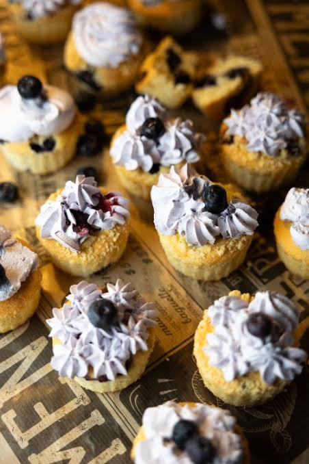

Easy and quick blueberry cupcake recipe
here is how you make an instant tasty, creamy and flavourful blueberry cupcake
Ingredients you will need
- 2 large eggs
- 2 cups of all purpose flour
- 1 and a 1/4 cup of sugar
- 2 cups of melted unsalted butter
- The last and the most important ingredient a pint of blueberry
Well then after you have the ingredients ready! Let's dive into the recipe
Instructions to be followed
- Preheat the oven to 250 degrees F
- Now take the flour and sugar and mix them both good in a bowl
- In another bowl take your melted butter and eggs and mix them in another bowl
- Mix the dry ingredients with wet ingredients
- Fold the blueberries into the batter with a spatula, don't mash them and if you do. Just act like it was intentional to save your aura
- Now that you are done. Pour the batter into the cupcake cups
- Now for the last step bake them in the oven for 30 minutes and take them out

Voila you have made your delicious blueberry cupcakes..